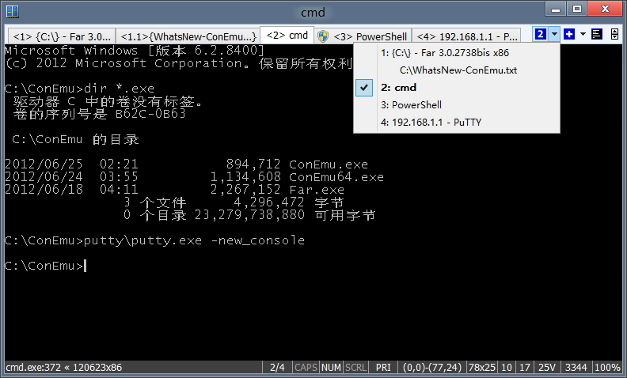

ConEmu may visualize with tabs all opened consoles, GUI applications (PuTTY for example) and Far Manager windows (panels, editors, viewers). ConEmu can handle up to 30 consoles and much more Far Manager editor (viewer) windows.

Tab captions may be changed
Initially Far Manager Viewer windows are framed by square brackets. Editor windows are framed by curly brackets. Modified editors marked with asterisk. Asterisk immediately appears and disappears on editor status change. You may change tabs appearence with templates.
Note: ConEmu plugin is required to get tabs for Far Manager editors and viewers.
Left click on a tab will activate it, except Far Manager can't switch to this window (dialog is opened, macro is recorded or played, Far Manager menu bar is active, and so on).
Right click on a tab will activate it (when it is possible) and (on succeeded activation) immediately close this tab. Far Manager windows will be closed by sending key sequence (F10 by default). Key sequence may be changed via registry value TabCloseMacro. Right click on a tab, containing other console applications (cmd, powershell, etc.) brings Recreate dialog.
Consoles, started under Administrator (look at Run as administrator checkbox), are marked with Shield icon. If You want, ConEmu may show " (Admin)" suffix instead of icon. You can change suffix text or completely remove it on Tabs page of Settings dialog.
Also, you may strip superfluous "Administrator:" prefix from console title ibid.
You may use Win-Number to activate consoles:
Win is default HostKey, You may select yours convinent combination (up to 3 keys) from Win, Ctrl, Alt, Shift and Apps.
By default, ConEmu internally handles Ctrl+Tab combination, which switch consoles too.
Also, you may use Win+Tab to switch consoles (check box on Keys page).